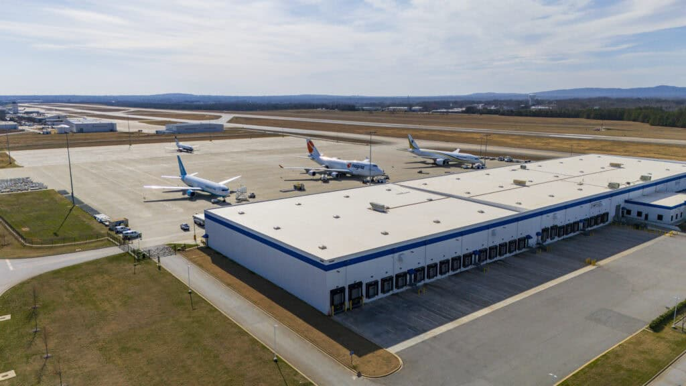

LEED Registered
General Aviation Facility
This project is a 5,000 square foot Federal Aviation Administration (FAA) terminal for general aviation services at Greenville-Spartanburg Airport (South Carolina).
RBGB led the entire LEED administration process and worked closely with all project team members to achieve LEED Gold certification.
The project includes a variable refrigerant flow HVAC system, solar water heating, rain harvest system for toilet flushing, daylighting, and extensive use of sustainable materials.
This project was able to divert 98% of all the construction waste from landfill and achieved all possible LEED points for water use (including exemplary performance).
